학습 목표 (Learning Objectives)
- ✓허블의 은하 분류 체계(타원·나선·불규칙 은하)에 따른 은하의 형태, 성간 물질 비율, 구성 별의 나이와 색을 비교할 수 있다.
- ✓전파 은하, 퀘이사, 세이퍼트 은하, 충돌 은하 등 특이 은하의 관측적 특징을 설명할 수 있다.
핵심 개념 체크리스트
학습을 마친 개념은 직접 체크해보세요!
2026 사대부고 고2 지구과학 자체 교재 원문 기반
동기 유발 · 생각해보기
수업 시작 전 핵심 질문
Q. 1920년대 초까지 천문학자들은 밤하늘의 '안드로메다 성운(바람개비 성운)'이 우리은하 안에 있는 작은 가스 구름인지, 아니면 우리은하 바깥에 있는 또 다른 거대한 은하인지를 두고 '대논쟁'을 벌였다. 허블은 어떻게 이 논쟁을 끝냈을까?
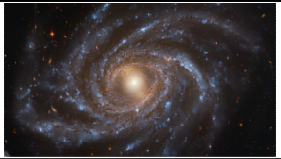
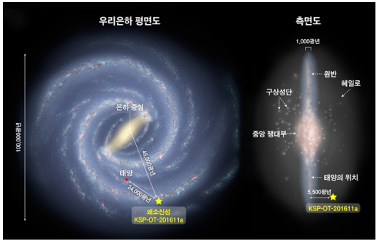
💡 먼저 스스로 이유를 추론해 본 뒤 버튼을 눌러 확인해보세요!
✨ 과학적 해설 및 모범 답안
1924년 에드윈 허블은 윌슨산 천문대 망원경으로 안드로메다 성운 속에서 세페이드 변광성을 발견하고 주기-광도 관계를 이용해 거리를 측정했습니다. 그 결과 안드로메다까지의 거리가 우리은하의 크기(지름 약 10만 광년)보다 훨씬 먼 약 250만 광년이라는 사실을 밝혀내어 우리은하 바깥에 수많은 외부 은하가 존재함을 증명했습니다.
핵심 개념 1
1. 허블의 은하 분류 체계 (Hubble Classification)
(1) 타원 은하, 나선 은하(정상·막대), 불규칙 은하 비교 (교재 p.67~69)
- •허블 분류 기준: 은하의 진화 순서가 아니라 가시광선 영역에서 관측되는 형태(모양)를 기준으로 분류한다!
- •성간 물질의 비율과 젊은 푸른 별의 비율 비교: 불규칙 은하(Irr) > 나선 은하(S, SB) > 타원 은하(E)
- •우리은하의 분류: 중심에 막대 구조가 있고 나선팔이 중간 정도로 감긴 막대 나선 은하(SBbc형)이다.
| 은하 분류 | 세부 구분 기준 (기호) | 성간 물질 및 구성하는 별의 특징 (나이 · 색깔) |
|---|---|---|
| 타원 은하 (E) | 나선팔이 없으며 원형(E0)에서 납작한 타원(E7)까지 편평도 $f = \frac{a-b}{a}$로 세분 | • 성간 물질이 거의 없어 새로운 별이 탄생하지 않음 • 주로 나이가 많고 온도가 낮은 붉은색 별(색지수 큼)로 구성 |
| 나선 은하 정상 나선(S) 막대 나선(SB) | 중심 막대 유무로 S / SB 구분 a ➔ b ➔ c형으로 갈수록: • 은하핵(중앙 팽대부) 크기 작아짐 • 나선팔이 느슨하게 감김 | • 중앙 팽대부(은하핵)와 헤일로: 나이가 많은 붉은색 별 분포 • 나선팔(원반): 성간 물질이 풍부하고 젊고 뜨거운 푸른색 별 다수 분포 |
| 불규칙 은하 (Irr) | 대칭이나 규칙적인 구조가 없는 은하 | • 성간 물질의 비율이 가장 높고 새로운 별의 탄생이 활발하여 젊고 푸른 별(색지수 작음)의 비율이 가장 높음 |
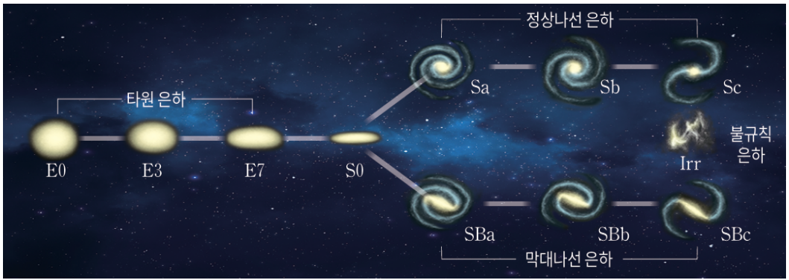
" class="max-h-72 w-auto object-contain rounded-lg group-hover:scale-[1.02] transition duration-300 cursor-zoom-in" onclick="openLightbox(this.src, '교재 그림: <허블의 은하 분류 모형 (소리굽쇠 다이어그램)>')" loading="lazy" />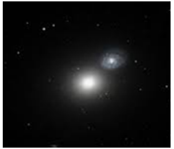
" class="max-h-72 w-auto object-contain rounded-lg group-hover:scale-[1.02] transition duration-300 cursor-zoom-in" onclick="openLightbox(this.src, '교재 그림: <타원 은하 NGC 4649>')" loading="lazy" />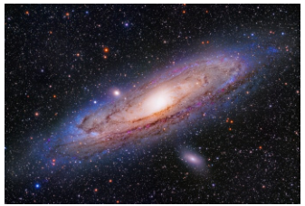
" class="max-h-72 w-auto object-contain rounded-lg group-hover:scale-[1.02] transition duration-300 cursor-zoom-in" onclick="openLightbox(this.src, '교재 그림: <안드로메다 은하>')" loading="lazy" />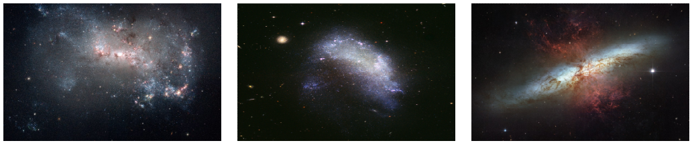
" class="max-h-72 w-auto object-contain rounded-lg group-hover:scale-[1.02] transition duration-300 cursor-zoom-in" onclick="openLightbox(this.src, '교재 그림: <불규칙 은하 (NGC 4449, NGC 1427A, NGC 3034)>')" loading="lazy" />
핵심 개념 2
2. 특이 은하 (활동 은하핵 AGN & 충돌 은하)
(1) 전파 은하, 퀘이사, 세이퍼트 은하, 충돌 은하 비교 (교재 p.69~71)
- •활동 은하(특이 은하)의 에너지원: 은하 중심에 위치한 초거대 질량 블랙홀로 주변 물질이 빨려 들어가며 중력 에너지가 전환되어 막대한 복사 에너지를 방출한다.
| 특이 은하 종류 | 가시광선 외형 | 핵심 관측적 특징 (스펙트럼 · 전파 · 거리) |
|---|---|---|
| ① 전파 은하 (예: 센타우루스 A) | 가시광선에서는 타원 은하처럼 보임 | • 강한 전파 방출 / 전파나 X선 관측 시 중심핵에서 뿜어져 나오는 대칭적인 제트(Jet)와 양 끝의 거대한 로브(Lobe) 관측 |
| ② 세이퍼트 은하 (예: NGC 1068) | 대부분 나선 은하 형태로 관측됨 | • 보통 은하보다 중심핵이 매우 밝음 • 가스가 빠르게 회전하여 스펙트럼에서 선폭이 매우 넓은 방출선이 관측됨 |
| ③ 퀘이사 (Quasar) (예: 3C 273) | 거리가 너무 멀어 하나의 별(점광원)처럼 보임 | • 적색 편이($z$)가 매우 커서 우주 탄생 초기에 형성된 가장 멀리 있는 천체 • 크기는 태양계 정도로 매우 작으나 에너지는 보통 은하의 수백~수천 배 방출 (넓은 방출선 관측) |
| ④ 충돌 은하 (예: 더듬이 은하) | 상호 중력으로 뒤틀린 다양한 형태 | • 은하가 충돌해도 별 사이의 거리가 매우 멀어 별끼리 직접 충돌하는 일은 거의 없음 • 거대 성간 분자운이 충돌·압축되어 새로운 별의 탄생이 폭발적으로 촉진됨 (우리은하와 안드로메다 은하도 약 40억 년 후 충돌 예정) |
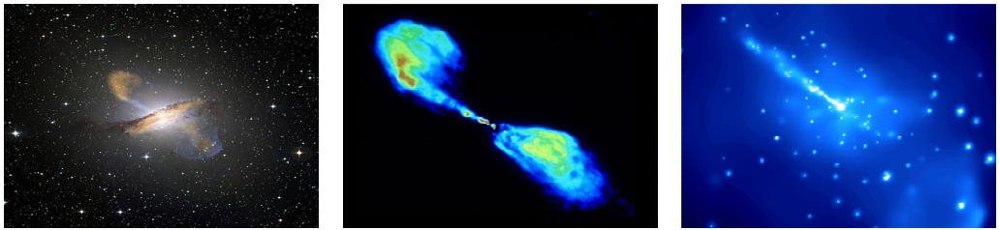
" class="max-h-72 w-auto object-contain rounded-lg group-hover:scale-[1.02] transition duration-300 cursor-zoom-in" onclick="openLightbox(this.src, '교재 그림: <전파 은하 NGC 5128의 가시광선 · 전파(제트와 로브) · X선 영상 비교>')" loading="lazy" />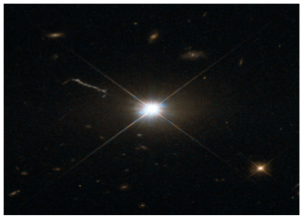
" class="max-h-72 w-auto object-contain rounded-lg group-hover:scale-[1.02] transition duration-300 cursor-zoom-in" onclick="openLightbox(this.src, '교재 그림: <별처럼 보이는 퀘이사 3C 273>')" loading="lazy" />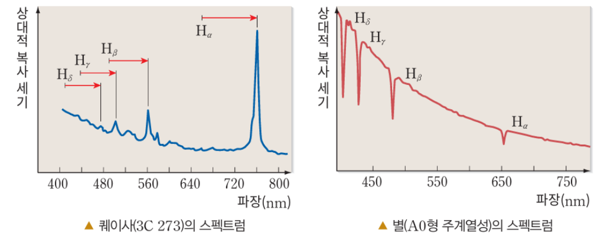
" class="max-h-72 w-auto object-contain rounded-lg group-hover:scale-[1.02] transition duration-300 cursor-zoom-in" onclick="openLightbox(this.src, '교재 그림: <퀘이사의 큰 적색 편이와 스펙트럼 비교>')" loading="lazy" />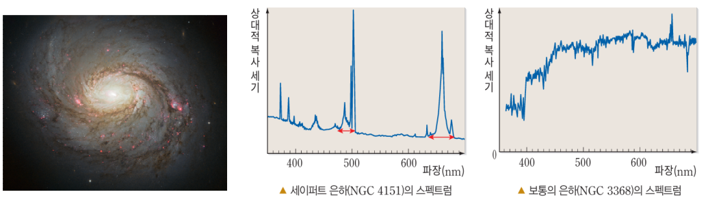
" class="max-h-72 w-auto object-contain rounded-lg group-hover:scale-[1.02] transition duration-300 cursor-zoom-in" onclick="openLightbox(this.src, '교재 그림: <세이퍼트 은하(NGC 1068)와 매우 넓은 방출선 스펙트럼>')" loading="lazy" />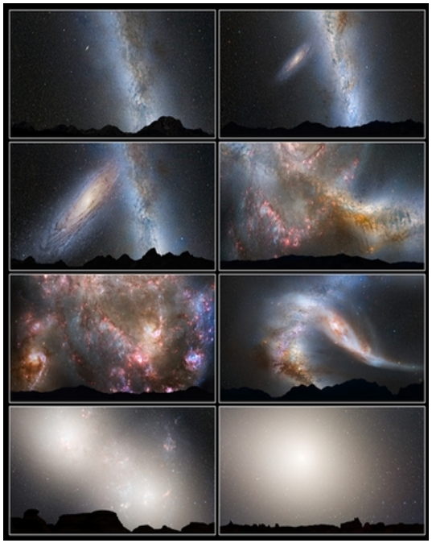
" class="max-h-72 w-auto object-contain rounded-lg group-hover:scale-[1.02] transition duration-300 cursor-zoom-in" onclick="openLightbox(this.src, '교재 그림: <우리은하와 안드로메다 은하의 충돌 시뮬레이션>')" loading="lazy" />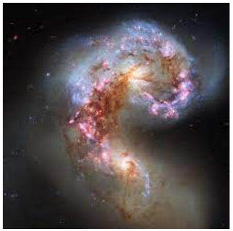
" class="max-h-72 w-auto object-contain rounded-lg group-hover:scale-[1.02] transition duration-300 cursor-zoom-in" onclick="openLightbox(this.src, '교재 그림: <충돌 은하 NGC 4038과 NGC 4039 (더듬이 은하)>')" loading="lazy" />
Interactive Checkpoints
클릭하면 교재 빈칸 정답과 해설이 나타납니다
단원 개념 적용하기 & 확인 문제
Q1
교재 p.68 확인: 나선 은하의 '중앙 팽대부(은하핵)'와 '나선팔'에 주로 분포하는 별의 나이와 색깔을 비교하고, 나선 은하 Sa형에서 Sc형으로 갈수록 은하핵 크기와 나선팔 감긴 정도는 어떻게 달라지는지 설명하시오.
모범 답안 및 해설
• 중앙 팽대부에는 나이가 많은 붉은색 별이 주로 분포하고, 나선팔에는 성간 물질이 많아 젊고 고온인 푸른색 별이 주로 분포합니다.• Sa형에서 Sc형으로 갈수록 중앙 팽대부(은하핵)의 상대적 크기는 작아지고, 나선팔은 느슨하게 감깁니다.
Q2
교재 p.69~71 핵심 체크: 가시광선 영역에서는 타원 은하처럼 보이나 전파 영역에서 중심핵과 연결된 '제트'와 '로브'가 뚜렷하게 관측되는 특이 은하는 무엇이며, 대부분 나선 은하 형태로 관측되면서 넓은 방출선을 보이는 은하는 무엇인가?
모범 답안 및 해설
제트와 로브가 전파 영역에서 관측되는 은하는 전파 은하이며, 나선 은하 형태로 넓은 방출선이 관측되는 은하는 세이퍼트 은하입니다.